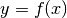
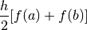
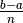
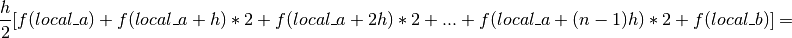
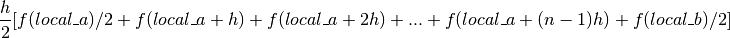
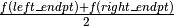

Trapezoidal Rule Integration¶
Trapezoidal Rule¶
The trapezoidal rule is a technique for approximating the region under a function, , using trapezoids to calculate area. The process is quite simple. Let a and b represent the left and right endpoints of the function. The interval [a,b] is divided into subintervals. For each subinterval, the function is approximated with a straight line between the function values at both ends of the subinterval. Each subinterval is now a trapezoid. Lastly, the area of each trapezoid is calculated and all areas are summed to get an approximation of the area under the function.
Parallelization¶
In order to parallelize this rule, we must identify the necessary tasks and decide how to map the tasks to the processes. Tasks include finding the area of many single trapezoids and then summing these areas together. Intuitively, as we increase the number of trapezoids, we will receive a more accurate prediction for the area under the curve. Thus, we will be using more trapezoids than cores in this problem and we will need to split up the computations for calculating the areas of the trapezoids. We choose to do this by assigning each process a subinterval that contains the number of trapezoids obtained from the calculation of the total number of trapezoids divided by number of processes. This assumes that the total number of trapezoids is evenly divisible by the number of processes. Each process will apply the trapezoidal rule to its subinterval. Lastly, the master process adds together the estimates.

Code¶
file: MPI_examples/trapIntegration/mpi_trap/mpi_trap.c
The code for this example is from Peter Pacheco’s book, An Introduction to Parallel Programming. For further implementations and reading corresponding to this example, refer to his book which is listed below.
- Book: An Introduction to Parallel Programming, Peter Pacheco, Morgan Kaufmann Publishers, 2011
Build inside mpi_trap directory:
make mpi_trap
Execute on the command line inside mpi_trap directory:
mpirun -np <number of processes> ./mpi_trap
1 2 3 4 5 6 7 8 9 10 11 12 13 14 15 16 17 18 19 20 21 22 23 24 25 26 27 28 29 30 31 32 33 34 35 36 37 38 39 40 41 42 43 44 45 46 47 48 49 50 51 52 53 54 55 56 57 58 59 60 61 62 63 64 65 66 67 68 69 70 71 72 73 74 75 76 77 78 79 80 81 82 83 84 85 86 87 88 89 90 91 92 93 94 95 96 97 98 99 100 101 102 103 104 105 106 107 108 109 110 111 112 113 114 115 116 117 118 119 120 121 122 123 124 125 126 127 128 129 130 131 132 133 134 135 136 137 138 139 140 141 142 143 144 145 146 147 148 149 150 151 152 153 | /*
* Peter S. Pacheco, An Introduction to Parallel Programming,
* Morgan Kaufmann Publishers, 2011
* IPP: Section 3.4.2 (pp. 104 and ff.)
* Timing and command line argument added by Hannah Sonsalla,
* Macalester College, 2017
*
* mpi_trap.c
*
* ... Use MPI to implement a parallel version of the trapezoidal
* rule. Uses collective communications to distribute the
* input data and compute the global sum.
*
* Input: Number of trapezoids
* Output: Estimate of the integral from a to b of f(x)
* using the trapezoidal rule and n trapezoids.
*
* Usage: mpirun -np <number of processes> ./mpi_trap < number of trapezoids>
*
* Algorithm:
* 1. Each process calculates "its" interval of
* integration.
* 2. Each process estimates the integral of f(x)
* over its interval using the trapezoidal rule.
* 3a. Each process != 0 sends its integral to 0.
* 3b. Process 0 sums the calculations received from
* the individual processes and prints the result.
*
* Note: f(x) is all hardwired to x*x.
*
*/
#include <stdio.h>
#include <stdlib.h>
#include <string.h>
#include <mpi.h>
const double a = 0;
const double b = 2000000000;
/* Function declarations */
void Get_input(int argc, char* argv[], int my_rank, double* n_p);
double Trap(double left_endpt, double right_endpt, int trap_count,
double base_len);
double f(double x);
int main(int argc, char** argv) {
int my_rank, comm_sz, local_n;
double n, h, local_a, local_b;
double local_int, total_int;
double start, finish, loc_elapsed, elapsed;
MPI_Init(NULL, NULL);
MPI_Comm_rank(MPI_COMM_WORLD, &my_rank);
MPI_Comm_size(MPI_COMM_WORLD, &comm_sz);
Get_input(argc, argv, my_rank, &n); /*Read user input */
/*Note: h and local_n are the same for all processes*/
h = (b-a)/n; /* length of each trapezoid */
local_n = n/comm_sz; /* number of trapezoids per process */
/* Length of each process' interval of integration = local_n*h. */
local_a = a + my_rank*local_n*h;
local_b = local_a + local_n*h;
MPI_Barrier(MPI_COMM_WORLD);
start = MPI_Wtime();
/* Calculate each process' local integral using local endpoints*/
local_int = Trap(local_a, local_b, local_n, h);
finish = MPI_Wtime();
loc_elapsed = finish-start;
MPI_Reduce(&loc_elapsed, &elapsed, 1, MPI_DOUBLE, MPI_MAX, 0, MPI_COMM_WORLD);
/* Add up the integrals calculated by each process */
MPI_Reduce(&local_int, &total_int, 1, MPI_DOUBLE, MPI_SUM, 0,
MPI_COMM_WORLD);
if (my_rank == 0) {
printf("With n = %.0f trapezoids, our estimate\n", n);
printf("of the integral from %.0f to %.0f = %.0f\n",
a, b, total_int);
printf("Elapsed time = %f milliseconds \n", elapsed * 1000);
}
/* Shut down MPI */
MPI_Finalize();
return 0;
} /* main */
/*------------------------------------------------------------------
* Function: Get_input
* Purpose: Get the user input: the number of trapezoids
* Input args: my_rank: process rank in MPI_COMM_WORLD
* comm_sz: number of processes in MPI_COMM_WORLD
* Output args: n_p: pointer to number of trapezoids
*/
void Get_input(int argc, char* argv[], int my_rank, double* n_p){
if (my_rank == 0) {
if (argc!= 2){
fprintf(stderr, "usage: mpirun -np <N> %s <number of trapezoids> \n", argv[0]);
fflush(stderr);
*n_p = -1;
} else {
*n_p = atoi(argv[1]);
}
}
// Broadcasts value of n to each process
MPI_Bcast(n_p, 1, MPI_DOUBLE, 0, MPI_COMM_WORLD);
// negative n ends the program
if (*n_p <= 0) {
MPI_Finalize();
exit(-1);
}
} /* Get_input */
/*------------------------------------------------------------------
* Function: Trap
* Purpose: Serial function for estimating a definite integral
* using the trapezoidal rule
* Input args: left_endpt
* right_endpt
* trap_count
* base_len
* Return val: Trapezoidal rule estimate of integral from
* left_endpt to right_endpt using trap_count
* trapezoids
*/
double Trap(double left_endpt, double right_endpt, int trap_count, double base_len) {
double estimate, x;
int i;
estimate = (f(left_endpt) + f(right_endpt))/2.0;
for (i = 1; i <= trap_count-1; i++) {
x = left_endpt + i*base_len;
estimate += f(x);
}
estimate = estimate*base_len;
return estimate;
} /* Trap */
/*------------------------------------------------------------------
* Function: f
* Purpose: Compute value of function to be integrated
* Input args: x
*/
double f(double x) {
return x*x;
} /* f */
|
Global and Local Variables¶
In MPI, local variables only are important only to the process using them. Local variables in this problem include local_a, local_b, and local_n. Note that the values of local_a and local_b are completely dependent upon process rank. They must be specifically calculated for each process to ensure that each process receives a different subinterval. The variable local_n remains the same for every process.
In contrast, variables that are important to all processes are global variables. Variables a, b and n are some global variables in this example. These variables do not change values during the duration of the program.
Trap Function¶
This function implements the trapezoidal rule for the interval given as input.
To calculate the area of a single trapezoid, we need to know the left and right endpoints, and the length of the trapezoid. Let a, b and h represent the left endpoint, right endpoint and length respectively. The function values at these endpoints are f(a) and f(b). The area of the trapezoid is as follows:
Area of one trapezoid =

However, in our problem there are many subintervals and each subinterval may contain multiple trapezoids. Now we have a and b representing the left and right endpoint of function. The n trapezoids are of equal length, h where h = . Let’s focus on a single subinterval whose left endpoint is local_a and right endpoint is local_b. Then the trapezoids within the interval have the following endpoints:
[local_a, local_a + h], [local_a + h, local_a + 2h], … , [local_a, local_a + (n-1)h, b]
The sum of the areas of the trapezoids (estimate of area of the subinterval) is:
Subinterval area =


The Trap function follows this logic closely. The function takes both left and right endpoints, number of trapezoids within the subinterval and trapezoid length. A for loop is used to loop through the endpoints of all of the trapezoids within the subinterval. The function value at each of these points is accumulated to . Lastly, this sum is multiplied by trapezoid length to get the total area of the subinterval.
double Trap(double left_endpt, double right_endpt, int trap_count, double base_len) {
double estimate, x;
int i;
estimate = (f(left_endpt) + f(right_endpt))/2.0;
for (i = 1; i <= trap_count-1; i++) {
x = left_endpt + i*base_len;
estimate += f(x);
}
estimate = estimate*base_len;
return estimate;
} /* Trap */